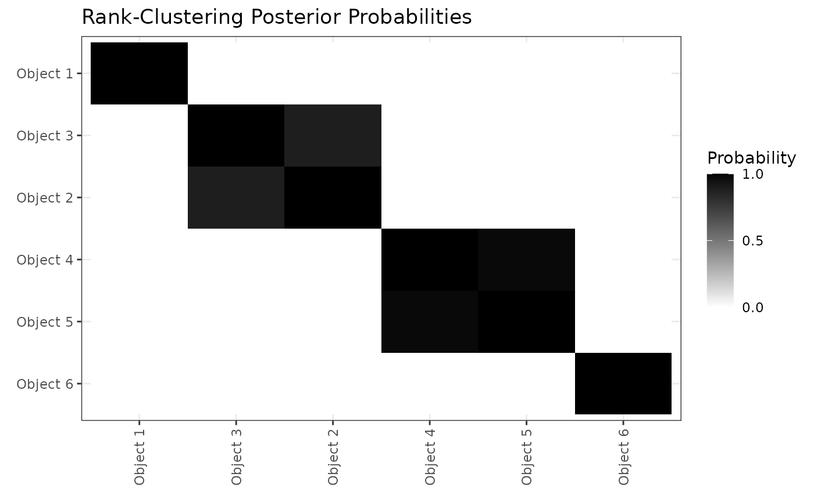

rankclust Tutorial
tutorial.RmdIn this tutorial, we demonstrate the key functionality of the
rankclust package on simulated data. The tutorial includes
code for random data generation, density calculation, and fitting of
Bayesian Bradley-Terry-Luce (BTL) models and Rank-Clustered BTL (RCBTL)
models. We begin by loading the packages necessary for these tasks.
Random Data Generation
We first generate samples from a BTL model in which some objects have equal worth parameters (i.e., are “rank-clustered”). Specifically, we will draw observations from \(I=500\) judges who each assess \(J=8\) objects. The true, underlying parameter worth values are \[\omega = \big(1 \ 2 \ 4 \ 4 \ 4 \ 16 \ 16 \ 32 \big)\] This means that there are 5 rank-clusters: 3 singletons, a pair, and a triple.
Let’s visualize our observed rankings, \(\Pi\):
ggplot(melt(Pi),aes(x=value,fill=factor(Var2)))+
geom_bar(color="black")+theme_bw()+
scale_fill_manual(values=c("#F7FCF5","#E5F5E0","#A1D99B","#74C476","#238B45","#006D2C","#00441B","black"))+
scale_x_continuous(breaks=1:10)+
labs(x="Object",fill="Rank Place",title="Observed Ranks by Object")
We can see in the above stacked barchart that object 8 receives the most first-place votes, while objects 6 and 7 receive fewer first-place places, but similar such votes between the two of them. Knowing the true worth parameters, \(\omega\), this is unsurprising since objects 6 and 7 are rank-clustered and jointly have the second-highest object-level worth parameter. However, it’s hard to rank objects further down in the ranking, or make sense of potentially-complex relationships in these rankings.
Model-Fitting: Standard BTL Model
Let’s now fit a standard BTL model to the observed rankings. We place
an independent Gamma(\(a_\gamma=3,b_\gamma=2\)) prior on each
worth parameter, \(\omega_j\). Note
that we are running 2 chains of 1000 iterations, remove the first half
as burn-in, and perform no thinning. All posterior samples of \(\omega\) are normalized post-hoc to sum to
1 (by default; can be changed using the normalize_omega
argument).
resBTL <- mcmc_BTL(Pi=Pi,J=8,a_gamma=3,b_gamma=2,num_iters=1000,chains=2,burn_prop = 0.5, thin = 1,seed = 1)
#> [1] "Estimating chain 1 of 2."
#> [1] "Estimating chain 2 of 2."
head(resBTL)
#> chain iteration omega1 omega2 omega3 omega4 omega5
#> 1 1 501 0.01616850 0.02830830 0.05553037 0.04982330 0.05716712
#> 2 1 502 0.01409034 0.02911296 0.04949263 0.04528831 0.05442372
#> 3 1 503 0.01291203 0.02761039 0.04514252 0.04939879 0.04864755
#> 4 1 504 0.01413523 0.02699455 0.05207117 0.05196366 0.04536763
#> 5 1 505 0.01360209 0.02692282 0.04915580 0.05483144 0.05196633
#> 6 1 506 0.01405869 0.02471245 0.05103484 0.05005285 0.05006881
#> omega6 omega7 omega8
#> 1 0.1720380 0.1836909 0.4372736
#> 2 0.1951772 0.1825139 0.4299009
#> 3 0.1958714 0.1828112 0.4376061
#> 4 0.1825656 0.1965223 0.4303799
#> 5 0.1828447 0.1892798 0.4313970
#> 6 0.1949887 0.1879992 0.4270844Next, we’ll view trace plots and posterior violin plots to assess convergence and mixing:
p1_btl <- ggplot(melt(resBTL,id.vars=c(1,2)),aes(x=iteration,y=value,color=chain))+
geom_line()+facet_wrap(~variable,nrow=3)+theme_bw()+theme(legend.position = c(.85,.12))+
labs(x="Iteration",y="Value",title="Trace Plots: Standard BTL")
#> Warning: A numeric `legend.position` argument in `theme()` was deprecated in ggplot2
#> 3.5.0.
#> ℹ Please use the `legend.position.inside` argument of `theme()` instead.
#> This warning is displayed once every 8 hours.
#> Call `lifecycle::last_lifecycle_warnings()` to see where this warning was
#> generated.
p2_btl <- ggplot(melt(resBTL,id.vars=c(1,2)),aes(x=variable,y=value))+
geom_violin()+theme_bw()+
labs(x="Parameter",y="Posterior",title="Posterior Violin Plots: Standard BTL")
p1_btl
p2_btl
We can start to see some patterns emerging: Object 8 is most preferred, followed by objects 6 and 7 (similarly preferred between them), followed by objects 3, 4, and 5 (similarly preferred among them), followed by object 2, and followed in last by object 1. These similarities among groups, however, are uncertain and not model-specified. This leads us to the Rank-Clustered BTL, which is able to specifically infer rank-clusters of objects based on the observed ranking data.
Model-Fitting: Rank-Clustered BTL Model
We now fit a Rank-Clustered BTL model to the observed rankings. As
specified by the model, we place a PSSF prior with hyperparameters \(a_\gamma=3\), \(b_\gamma=2\), and \(\lambda=5\) to be vague. Note that we are
running 2 chains of num_iters=1000 outer iterations and
nu_reps=2 inner iterations for a total of 2000 iterations
per chain, but remove the first half as burn-in and perform no thinning.
All posterior samples of \(\omega\) are
normalized post-hoc to sum to 1 (by default; can be changed using the
normalize_omega argument).
nu0 <- apply(resBTL[,-c(1,2)],2,mean) # initialize at posterior mean of standard model
resRCBTL <- mcmc_RCBTL(Pi=Pi,J=8,a_gamma=3,b_gamma=2,lambda=5,nu0=nu0,
num_iters=500,nu_reps=2,chains=2,burn_prop=0.5,thin=1,seed=1)
#> [1] "Estimating chain 1 of 2."
#> [1] "Estimating chain 2 of 2."
head(resRCBTL)
#> chain iteration K omega1 omega2 omega3 omega4 omega5
#> 1 1 501 5 0.01197153 0.02372197 0.04630879 0.04630879 0.04630879
#> 2 1 502 5 0.01110262 0.02362131 0.04427417 0.04427417 0.04427417
#> 3 1 503 5 0.01154979 0.02291681 0.04760864 0.04760864 0.04760864
#> 4 1 504 5 0.01326568 0.02566073 0.04965306 0.04965306 0.04965306
#> 5 1 505 5 0.01310281 0.02514086 0.04742993 0.04742993 0.04742993
#> 6 1 506 5 0.01383825 0.02851416 0.04824661 0.04824661 0.04824661
#> omega6 omega7 omega8 nu1 nu2 nu3 nu4
#> 1 0.2015069 0.2015069 0.4223663 0.07050187 0.1397017 0.2727183 1.186699
#> 2 0.2004170 0.2004170 0.4316195 0.06645674 0.1413896 0.2650109 1.199632
#> 3 0.1947861 0.1947861 0.4331353 0.06866033 0.1362341 0.2830203 1.157950
#> 4 0.1931995 0.1931995 0.4257154 0.07509461 0.1452607 0.2810769 1.093667
#> 5 0.1803830 0.1803830 0.4587005 0.07589345 0.1456197 0.2747214 1.044806
#> 6 0.1941247 0.1941247 0.4246583 0.07593182 0.1564599 0.2647338 1.065181
#> nu5 nu6 nu7 nu8 G1 G2 G3 G4 G5 G6 G7 G8
#> 1 2.487369 NA NA NA 1 2 3 3 3 4 4 5
#> 2 2.583536 NA NA NA 1 2 3 3 3 4 4 5
#> 3 2.574870 NA NA NA 1 2 3 3 3 4 4 5
#> 4 2.409897 NA NA NA 1 2 3 3 3 4 4 5
#> 5 2.656863 NA NA NA 1 2 3 3 3 4 4 5
#> 6 2.330141 NA NA NA 1 2 3 3 3 4 4 5Next, we’ll view trace plots and posterior violin plots to assess convergence and mixing:
p1_rcbtl <- ggplot(melt(resRCBTL[,1:11],id.vars=c(1,2,3)),aes(x=iteration,y=value,color=chain))+
geom_line()+facet_wrap(~variable,nrow=5)+theme_bw()+
labs(x="Iteration",y="Value",title="Trace Plots: Rank-Clustered BTL")
p2_rcbtl <- ggplot(melt(resRCBTL[,1:11],id.vars=c(1,2,3)),aes(x=variable,y=value))+
geom_violin()+theme_bw()+
labs(x="Parameter",y="Posterior",title="Posterior Violin Plots: Rank-Clustered BTL")
p1_rcbtl
p2_rcbtl
Just as before, we can see that Object 8 is most preferred, followed by objects 6 and 7 (similarly preferred between them), followed by objects 3, 4, and 5 (similarly preferred among them), followed by object 2, and followed in last by object 1. How “similar” are these groups objects preferred? We can see this by examining a posterior clustering matrix:
order_omega <- order(apply(resRCBTL[,4:11],2,mean))
pairs <- expand.grid(i=1:8,j=1:8,prob=0)
pairs <- pairs[pairs$i < pairs$j,]
pairs$prob <- apply(pairs,1,function(pair){
i <- pair[1]; j <- pair[2]
mean(apply(resRCBTL[,paste0("G",c(i,j))],1,function(x){x[1]==x[2]}))
})
pairs2 <- pairs[,c(2,1,3)]; names(pairs2) <- c("i","j","prob")
pairs3 <- data.frame(i=1:8,j=1:8,prob=1)
pairs <- rbind(pairs,pairs2,pairs3)
ggplot(pairs,aes(x=factor(i,levels=rev(order_omega)),
y=factor(j,levels=order_omega),fill=prob))+
geom_tile()+scale_fill_gradient(low="white",high="black",breaks=c(0,.5,1))+
theme_bw()+labs(x=element_blank(),y=element_blank(),fill="Probability",
title="Rank-Clustering Posterior Probabilities")+
theme(legend.position = c(.8,.9),legend.direction = "horizontal",
axis.text.x = element_text(angle = 90, vjust = 0.5, hjust=1))
Based on the above figure, we see that Objects 6 and 7 are rank-clustered with high posterior probability, as are objects 3, 4, and 5. Objects 8, 2, and 1 are in singleton clusters. This result precisely aligns with the true rank-clustering of objects based on the \(\omega\) that generated the rankings.